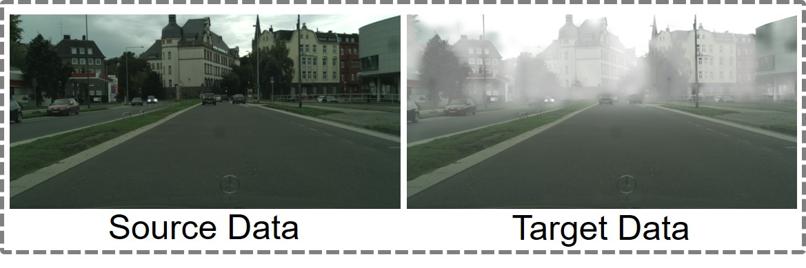
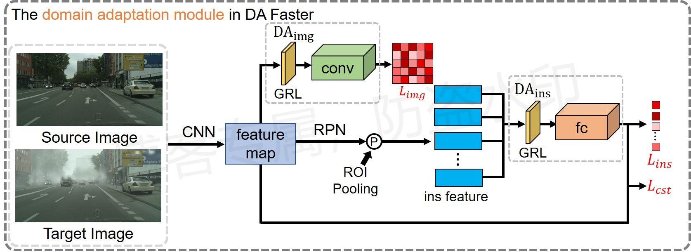
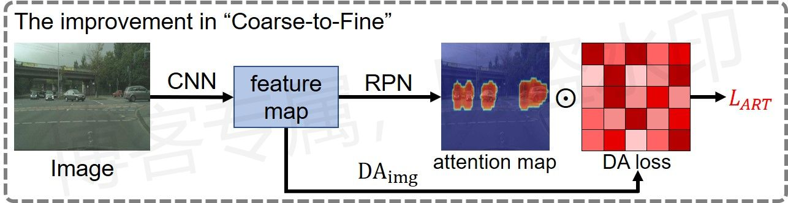
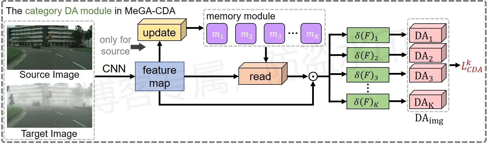
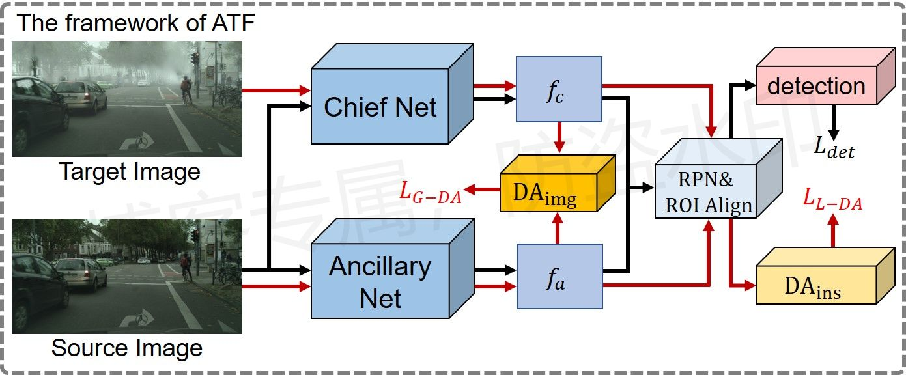

域适应目标检测小结¶
由于所看的论文相对有限，因此总结的方法可能不全面，敬请谅解。
注：全文原创，未经允许，禁止转载！
概述¶
虽然目标检测算法的研究已经取得了相当可观的进展，但是传统目标检测算法的检测性能往往会受到训练数据分布的约束，在测试时，只有测试数据和训练数据分布一致时，检测器的检测性能才能达到最好。但是现实世界中的目标检测容易面临来自视点、外观、背景、光照以及图像质量等方面的巨大差异，可能会导致训练数据和测试数据之间分布不一致，即领域偏移问题，从而影响检测器的检测性能。以自动驾驶为例，如下图所示，训练数据往往是在晴朗的天气下收集的，但在现实应用中不可避免地会遇到雾天、雨天等情况，此类复杂的天气将会严重影响汽车对前方物体的检测，不利于分析当前的路况，最终会影响行驶时的决策。

针对这种训练数据与测试数据分布不一致，即领域偏移的问题，一种常见的解决方法就是领域自适应算法（简称域适应），通过对齐两个领域的特征分布，让模型在两个领域图像上提取相同的特征，使模型可以适应视觉上不同于训练数据领域的新领域数据，例如：利用晴天数据训练的检测模型也可以很好地应用到雾天下的目标检测场景。
简单来说，域适应目标检测任务可以概括为：利用领域A的图片和标签、领域B的图片训练模型，测试模型在领域B上的目标检测性能，其中A、B可以分别表示晴天和雾天。
方法小结¶
主要思路¶
域适应算法的研究目标用一句话来概括就是：对齐源域和目标域的特征分布，使特征提取网络在面对不同领域下的输入图像时，可以提取到“尽可能相同的特征”，即域不变的特征，进一步检测器利用域不变的特征进行物体检测。
在域适应中，一种典型的方法就是利用对抗学习来进行领域对齐。在对抗学习任务中，最核心的就是鉴别损失L_D，在训练过程中，以减小鉴别损失L_D为目的去优化鉴别器，从而提升自己的鉴别能力，同时以相反的方式训练生成器，以增大鉴别损失L_D为目的去优化生成器，期望生成器所生成的图像可以骗过鉴别器，进一步间接提升自己的图片生成能力。
参考对抗学习的思路，在域适应算法的训练过程中也有两个任务：得到好的域分类器，可以正确判断一张图属于哪个领域；并且让CNN产生上述域分类器难以鉴别领域归属的特征，也就是让两组特征充分对齐，生成域不变特征，从而骗过域分类器，这里可以把域分类器和CNN分别看成鉴别器和生成器。对于最优的域分类器，面对不同领域的图片特征，分类器可以很好地做出决策，如果此时对于一组特征，分类器难以做出决策，说明该特征已经不具有原领域的特点，属于中和了两个领域特点的新特征，我们最终的目的就是让CNN可以提取到这种特征。
注：难以做出决策应该对应两个预测概率都接近0.5（域分类器是二分类），如果是完全错误的预测，比如S域图片预测为S域的概率接近0、预测为T域的概率接近1，则说明网络的优化过程有问题。
对此需要额外做两步操作：在原始目标检测网络中引出一个新的分支——域分类器，以提取到的特征作为输入，判断该特征属于哪个领域，同时再设计域分类损失（对应鉴别损失），该损失以相反的方式优化域分类器和CNN，以降低分类损失的目的优化分类器，以提高分类损失的目的优化CNN，在提升域分类器分类能力的同时促进CNN提取域不变特征，二者相互促进，共同优化。在实现过程中，最常用的方法就是梯度反转法，将梯度反转层（GRL）嵌入CNN中，梯度回传到特征提取网络时做一次反转，变为原来的相反数，从而实现反转优化目的的作用。
论文《DA Faster》首先提出了基于Faster R-CNN的域适应目标检测算法，设计了图像级别的自适应模块和实例级别的自适应模块，其中，在图像级别的自适应模块中，提取主干网络最后一层的特征，逐像素点判断领域归属，在实例级自适应模块中，提取ROI Pooling所得到的实例特征，逐实例判断领域归属，两种域分类损失从两个角度优化网络。同时还设计了一致性正则化损失，用于鼓励不同水平的域分类器具有一致的领域预测结果，从而提高模型的鲁棒性。

注：像素级别的领域对齐模块和实例级别的领域对齐模块是域适应目标检测算法中常用的基础模块，后面的很多算法都将这种对齐方法作为最基本的特征对齐策略，并且在此基础上做改进。
领域对齐模块的引入虽然可以在一定程度上提升网络提取跨域不变特征的能力、缓解领域差异导致的问题，但也会带来一个问题——容易扭曲原始数据的特征分布，破坏两个领域之间的结构性区别特征，从而降低模型的检测性能，最直接的体现就是RPN模块不能很好地根据CNN所提取的特征判断前景锚点和背景锚点。通俗来讲，当只用带有真实标签的源域训练网络时，网络在标签的监督下，可以提取辨别性明显的源域特征，但当引入无标签的目标域数据时，为了符合域分类损失的目的，模型在强制对齐（混淆）两个领域特征的同时，可能会牺牲模型的特征提取能力，进一步降低模型的检测性能。
为了方便起见，下文中将网络产生域不变特征的能力简称为可转移性，转移性越强，表示模型在该区域越容易跨域产生相同的特征，将网络对物体的检测能力简称为可辨别性，可辨别性越强，表明模型所提取的特征越具有类别辨识度，即模型对物体检测的能力越强，平衡网络可转移性与可辨别性二者之间的矛盾是优化域适应算法的根本方向。
差异对齐¶
传统的对齐网络执行的是无差异的对齐，也就是以相同的对齐规则来强制对齐所有特征数据的领域差异，但现实应用中，执行类似无差别的对齐策略可能会损害模型的检测性能，因为特征数据的相对重要性不同，并且不同类别的物体也包含不同的特征信息，因此我们需要对不同的特征数据执行”差异对齐“。
特征数据对齐的差异最直接体现在域分类损失的不同上，对于较小的领域偏移，目标域样本特征靠近源域样本特征，域分类器往往很难做出判断，并且这些区域会干扰目标检测器的性能，需要执行强对齐；对于比较大的领域偏移，目标域样本特征远离源域样本特征，如场景分布或者天气的差异，域分类器往往很好判断领域归属，因此这些区域对检测性能的干扰较低，对此，如果以相同的规则强制对齐差异大的区域，会损害模型的检测性能。我们期望网络可以重点关注具有小领域偏移的样本，这些区域具有相似的特征分布，并且忽略领域偏移大的样本，对此在Strong-Weak算法中，作者引入焦点损失（Focal loss），根据分类的难易程度对最初的全局域分类损失做加权处理，将更多的权重赋予难以分类的样本上，并且降低易分类样本的域分类损失。
前景对齐¶
目标检测算法在检测物体的时候，需要对物体实现定位功能，因此要着重考虑前景区域的特征信息，不同领域之间的前景要比背景共享更多的共同特征，因此着重凸显前景区域信息的重要性对提升模型的跨域检测性能有重要的影响。
在Faster R-CNN中，RPN模块就充当检测前景区域的作用（其实RPN模块也是一种注意力机制），在Coarse-to-Fine算法中，作者就利用了这一特性，首先提取RPN模块输出的特征图，沿通道方向相加得到空间注意力图，图上的数据分布表示了特征的空间分布，最后利用该图对特征数据的对齐损失做加权处理，增大前景区域的对齐损失，提高优化力度，CST-MCD算法也用到了这一思想。

除了上述对前景区域的显式定位，还有一种方法就是隐式定位，用于间接提升模型的定位能力，而非直接得到定位结果。由于分类网络具有一定的弱定位能力，可以有效地定位前景的物体区域，因此可以借助分类器来让网络从图像的整体学习对象级概念，提升前景定位的能力，在ICR-CCR算法中，作者在检测器的主干网络添加了一个多标签分类器分支，并且利用源域图像训练该分类器，随着分类器的优化，网络可以学习能够激活对象相关区域的类别特征，降低了匹配背景区域的风险。另外，引入的多分类器正好可以和检测器的分类模块相互促进，二者同时具有预测图像中物体类别的能力，因此可以结合二者的预测结果，得到前景实例检测的难易程度，利用难易程度对实例的域分类损失做加权，提高难检测实例的对齐力度，进一步提升模型领域适应能力。
类别对齐¶
在目标检测网络中，通常有多种类型的检测对象，并且每个类别都有自己的数据分布，但是以往的域适应目标检测忽略了这一问题，执行的大多都是不考虑类别的特征对齐，在训练过程中容易导致类之间特征的混淆，进一步破坏网络特征的可辨别性，影响模型的检测性能。利用对象的类别信息可以进一步细化先前的特征适应，对每个类别执行不同的特征适应有助于保持模型原本的特征提取能力。
想要执行类相关的对齐，一种最简单的思路就是为每个类别单独设立一个域分类器。但是由于目标域缺少边界框以及类别标签，无法定位目标域中的类别实例特征，因此如何利用目标域图片优化类相关的域分类器就成了最大的问题，缺少目标域类别特征，不能直接优化域分类器。在算法MeGA-CDA中，作者设计了记忆模块来存储不同类别对象的原型特征，这些原型特征可以很好地描述不同类别物体的特点，只利用源域中的类别特征数据去更新记忆模块中的原型特征，将现实世界中的类相关特征写入记忆模块。实际应用时取出记忆模块中的原型特征，再结合图像特征得到类别注意力图，用于定位指定类别的特征数据，最后利用这些特征优化类相关的域分类器。

为了避免由于缺少目标域标签所带来的优化问题，一些算法并没有直接选择为每个类别单独设立域分类器，而是采用其他的特征对齐方法。例如在Coarse-to-Fine中，作者参考原型网络，在两个领域中依次为每个实例类别单独设立了一个原型（一共有2\times K个原型），简单来说就是“类别特征”，并且采用“动量更新法”更新原型，最后每个原型可以很好地表示指定领域指定类别的特征。在每次迭代优化的过程中，对领域之间的原型特征逐类别做l_2损失，减小领域之间特征的距离，进一步实现类别特征对齐。
注：
- MeGA-CDA算法中的原型特征只需要有特定的类别信息即可，后续还会再和领域特征相结合，生成注意力图；Coarse-to-Fine中的原型特征不仅需要具有类别信息，还需要有指定的领域信息，因此设立了两组原型，让同类的原型不断靠近，从而对齐两个领域的类别特征数据，注意区别；
- 由于目标域缺少标签，在Coarse-to-Fine算法中，采用网络预测的边界框来裁剪实例特征，因此这里所用的裁剪边界框又成伪标签，伪标签也是一个优化思路，具体见下一节。
伪标签¶
将目标域图片传入检测网络得到预测结果，由于目标域数据没有标注，因此无法确定网络预测得到的边界框是否精准，对于这种预测结果，称为“伪标签”。正是因为目标域数据无标注，因此大多数算法都选择丢弃伪标签这一变量，不会考虑用目标域图片的预测结果来训练网络的检测性能，忽略了目标域样本和模型决策边界之间的关系，模型为了让两个领域的特征分布尽可能相似，特征提取器会在决策边界附近生成模糊的特征，会损害网络对辨识力特征的提取，这也是导致域适应模型在目标域数据上可辨别性降低的一个重要的原因。
虽然目标域的网络预测结果不能直接用于优化检测模型，但是我们可以挖掘网络各个模块的隐含关系，建立优化“桥梁”。在算法CST-MCD中，作者指出Faster R-CNN中的RPN模块和RPC模块具有一定的联系（RPC模块是指第二个阶段的预测模块），二者的预测应该具有一致性，即前景背景的预测结果应该一致，因此可以用一个模块的输出当成伪标签，去训练另一个模块，同时还利用伪标签的“可信度”对检测损失做了一个加权处理，提升高置信度的损失权重。（这里对检测性能的训练策略同时适用于源域和目标域图像）
注：前背景概率越趋于0.5，就越不可信。
在域适应分类算法中，也可以利用伪标签去提升模型的可辨别性。对于源域的图片，由于具有真实标签，因此模型的决策面可以很好地划分不同的类别特征，网络输出具有确定性（输出结果是唯一的），但对于目标域图像则不是这样，由于具有领域差异，模型往往不容易判定图像类别，网络的输出具有不确定性，对此，如果想要使模型可以很好地识别目标域图片，则可以让模型的输出从不确定的转为确定的，这就是算法MCD的核心思想。首先构建两个相同的分类器，将同一张图传入两个分类器，利用分类结果之间的差异（如l_1距离）来优化网络的跨域识别性能，同时，为了不让两个决策面重合，CNN和分类器以相反的方式训练，鼓励分类器得到不同的分类结果，以一种对抗的方式训练（和GRL类似）。该算法考虑了目标域样本和决策边界之间的关系，因此有助于特征提取器在目标域上生成辨识力特征。
注：差异损失的引入主要是为了提升模型提取判别特征的能力，因此以缩小分类距离为目的去优化CNN才是算法的核心
算法CST-MCD中也用到了MCD类似的思想，如上面所提，在Faster R-CNN中，RPN和RPC两个模块可以看成两个相同的锚点分类器，用于预测锚点属于前景类别还是背景类别，因此可以将MCD中的距离损失应用到目标检测中，进一步提升模型的可辨别性。同时这里还降低了高置信度伪标签锚点的损失权重，相当于对MCD算法的改进，高置信度伪标签对应的区域往往是跨域检测效果好的区域，此时分类器很容易得到相同的结果，如果再强制放大分类器的差异，容易损害模型性能，因此需要降低此时的优化力度，这也是对抗网络中常用的训练策略，用于缓解训练后期生成器与鉴别器之间的优化矛盾。
除了利用伪标签提升模型的可辨别性，还可以进一步提升可转移性，也就是和域分类分支相结合。例如前面提到的Coarse-to-Fine、DA Faster算法，用伪标签裁剪实例特征，不过和CST-MCD不一样，这些算法只用于优化特征的对齐过程，不优化模型的检测性能。并且前面提到的ICR-CCR算法中分类一致性的思想也借助伪标签这一途径实现，在目标域中，利用多分类器与RPC模块之间的分类一致性，得到每个实例的预测难易程度，进一步再根据难易度对域分类损失做加权处理（同时也适用于源域）。
总的来说，虽然目标域没有真实标签，但目标域的网络预测数据还是可以用来优化网络的，尤其是对模型可辨别性的提升具有很大的帮助，核心思路就是要让目标域数据的检测结果参与到网络的优化过程中，即参与损失计算，只不过不能直接像源域那样直接优化，需要寻找模型之间的隐含关系，建立优化模型。（这里的隐含关系包括网络内部的联系，也包括新引入的模块与原网络之间的联系）
其他方法¶
在以往大多数的域适应算法中，目标检测网络的检测性能很大程度上依赖于源域数据，因为只有源域数据有边界框标签，因此纯目标检测算法（不加域适应分支）在检测源域图像数据时，可以达到最优的性能，所提取的特征最具有辨别性。域适应损失的引入，使得网络在提取图像的特征时，让目标域的特征向源域靠拢，同时让源域的特征也向目标域靠拢，这也是特征对齐的主要思想，问题就出在后者，强制将可靠的源域特征向不可靠的目标域特征进行对齐，容易打乱初始目标检测网络学习到的辨识性特征（主要指针对源域的辨识特征），引起源域特征崩溃的风险，进一步干扰目标检测网络的检测性能，这也是域适应目标检测算法中导致模型可辨别性降低的一个重要原因。
在算法ATF中，作者为了消除对齐源域特征所带来的负面影响，单独设置了一个辅助网络用于提取特征，其中主网络和辅助网络同时利用源域的图片训练目标检测性能，在计算域分类损失时，分别将目标域图片和源域图片传入主网络和辅助网络，将得到的特征图再分别传入同一个域分类器，分别执行对齐，主网和辅助网络通过同一个域分类器做联系。这种设计，可以只让目标域特征向源域靠拢，不改变网络对源域特征原有的可判别性，因此可以很好地和源域上的目标检测网络相结合。

参考算法¶
- MeGA-CDA: MeGA-CDA: Memory Guided Attention for Category-Aware Unsupervised Domain Adaptive Object Detection, CVPR 2021.
- Coarse-to-Fine: Cross-domain Object Detection through Coarse-to-Fine Feature Adaptation, CVPR 2020.
- ICR-CCR: Exploring Categorical Regularization for Domain Adaptive Object Detection, CVPR 2020.
- CST-MCD: Collaborative Training between Region Proposal Localization and Classification for Domain Adaptive Object Detection, ECCV 2020.
- ATF: Domain Adaptive Object Detection via Asymmetric Tri-way Faster-RCNN, ECCV 2020.
- Strong-Weak: Strong-Weak Distribution Alignment for Adaptive Object Detection, CVPR 2019.
- DA Faster: Domain Adaptive Faster R-CNN for Object Detection in the Wild, CVPR 2018.
- MCD: Maximum Classifier Discrepancy for Unsupervised Domain Adaptation, CVPR 2018.
- Focal Loss: Focal Loss for Dense Object Detection, ICCV 2017.
- GRL: Domain-Adversarial Training of Neural Networks, JMLR 2016.
注：以上仅是笔者个人见解，若有问题，欢迎指正。
初步完稿于：2023年2月10日